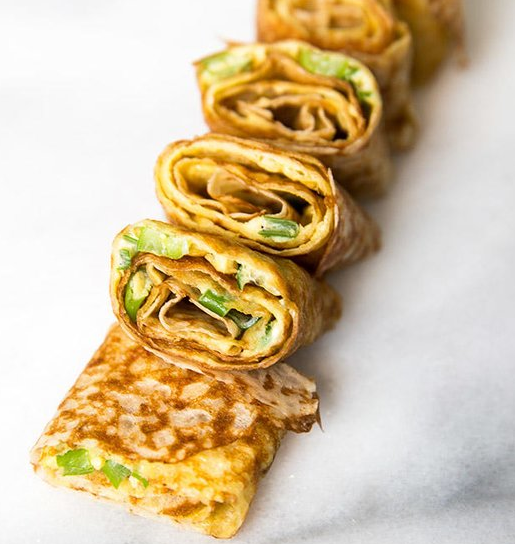

tineytai's recipes
tineytai's recipes

Egg Pancake
INGREDIENTS
- 1/2 cups of all-purpose flour
- 2 tablespoons cornstarch
- 1 cup water
- 3 eggs
- salt and pepper to taste
- 2 to 3 scallions, chopped
DIRECTIONS
- Mix the flour, cornstarch, and water together in a small bowl and let rest for 10 minutes.
- For each crepe, beat 1 egg with a tablespoon of scallions, a dash of sesame oil, and a pinch of both salt and white pepper.
- Heat a lightly oiled nonstick pan on medium heat. When the pan is hot, add about a ½ cup of the batter to the pan, swirling as you do to coat the bottom. Cook the crepe for about 3-4 minutes, until the top has set. Flip the pancake out onto a plate and then slide it back into the skillet with the cooked side facing up. Pour the egg onto the crepe and spread it with a spatula, keeping most of it on the crepe itself. Cook until the egg is just about set and then flip to the other side for about 10 seconds and slide off the plate onto a cutting board. Roll the crepe with the egg side on the inside into a long, rectangular roll. Slice into sections.
Enjoy!
~ Enjoy!
~ Enjoy!